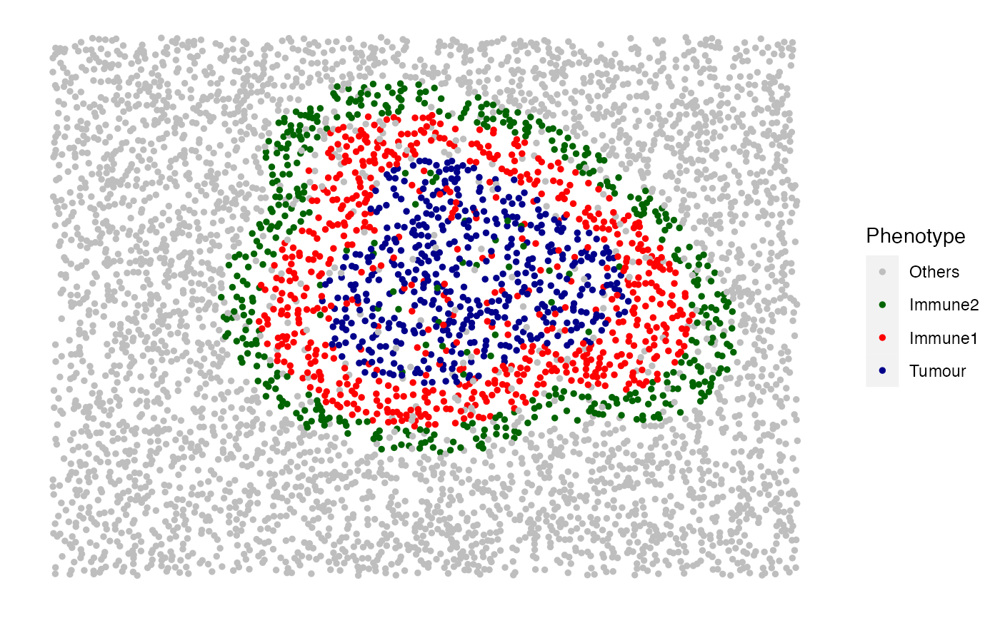

Based on an existing background image, simulate double rings of immune cells that surround tumour clusters. The inner ring is the internal margin of a tumour cluster. The outer ring is the external tumour margin. The tumour clusters and the double immune rings are simulated at the same time.
Usage
simulate_double_rings(
bg_sample = bg1,
bg_type = "Others",
n_dr = 2,
win = NULL,
dr_properties = list(I1 = list(name_of_cluster_cell = "Tumour", size = 300, shape =
"Circle", centre_loc = data.frame(x = 1000, y = 1000), infiltration_types =
c("Immune1", "Immune2", "Others"), infiltration_proportions = c(0.15, 0.05, 0.05),
name_of_ring_cell = "Immune1", immune_ring_width = 150,
immune_ring_infiltration_types = c("Others"), immune_ring_infiltration_proportions =
c(0.15), name_of_double_ring_cell = "Immune2", double_ring_width = 100,
double_ring_infiltration_types = c("Others"), double_ring_infiltration_proportions =
c(0.15)), I2 = list(name_of_cluster_cell = "Tumour", size = 300, shape = "Oval",
centre_loc = data.frame(x = 1200, y = 1200), infiltration_types = c("Immune1",
"Immune2", "Others"), infiltration_proportions = c(0.15, 0.05, 0.05),
name_of_ring_cell = "Immune1", immune_ring_width = 150,
immune_ring_infiltration_types = c("Others"), immune_ring_infiltration_proportions =
c(0.15), name_of_double_ring_cell = "Immune2", double_ring_width = 100,
double_ring_infiltration_types = c("Others"), double_ring_infiltration_proportions =
c(0.15))),
plot_image = TRUE,
plot_categories = NULL,
plot_colours = NULL
)Arguments
- bg_sample
(OPTIONAL) A data.frame or SingleCellExperiment class object with locations of points representing background cells. Further cell types will be simulated based on this background sample. The data.frame or the metadata of the SCE object should have colnames including "Cell.X.Positions" and "Cell.Y.Positions". By default use the internal
bg1background image.- bg_type
(OPTIONAL) String The name of the background cell type. By default is "Others".
- n_dr
Number of double immune rings. This must match the
length(dr_properties).- win
(OPTIONAL) owin object output from spatstat.geom::owin function. By default is the window of the background image.
- dr_properties
List of properties of the double immune rings. Please refer to the examples for the structure of
dr_properties.- plot_image
Boolean. Whether the simulated image is plotted.
- plot_categories
String Vector specifying the order of the cell categories to be plotted.
- plot_colours
String Vector specifying the order of the colours that correspond to the
plot_categoriesarg.
See also
simulate_background_cells for all cell simulation,
simulate_mixing for mixed background simulation,
simulate_clusters for cluster simulation,
simulate_immune_rings for single immune ring simulation, and
simulate_stripes for vessel simulation.
Other simulate pattern functions:
simulate_background_cells(),
simulate_clusters(),
simulate_immune_rings(),
simulate_mixing(),
simulate_stripes()
Examples
set.seed(610)
# manually define the properties of the immune ring
dr_properties <- list(D1 = list(name_of_cluster_cell = "Tumour",size = 300,
shape = "Circle",centre_loc = data.frame("x" = 1000, "y" = 1000),infiltration_types
= c("Immune1", "Immune2", "Others"),infiltration_proportions = c(0.15, 0.05, 0.05),
name_of_ring_cell = "Immune1",immune_ring_width = 150,immune_ring_infiltration_types
= c("Others"),immune_ring_infiltration_proportions = c(0.15),name_of_double_ring_cell
= "Immune2",double_ring_width = 100,double_ring_infiltration_types = c("Others"),
double_ring_infiltration_proportions = c(0.15)),
D2 = list(name_of_cluster_cell = "Tumour",size = 300,shape = "Oval",centre_loc
= data.frame("x" = 1200, "y" = 1200),infiltration_types = c("Immune1", "Immune2", "Others"),
infiltration_proportions = c(0.15, 0.05, 0.05),name_of_ring_cell = "Immune1",
immune_ring_width = 150,immune_ring_infiltration_types = c("Others"),
immune_ring_infiltration_proportions = c(0.15),name_of_double_ring_cell = "Immune2",
double_ring_width = 100,double_ring_infiltration_types = c("Others"),
double_ring_infiltration_proportions = c(0.15)))
double_ring_image <- simulate_double_rings(bg_sample = bg1,
n_dr = 2, dr_properties = dr_properties)
